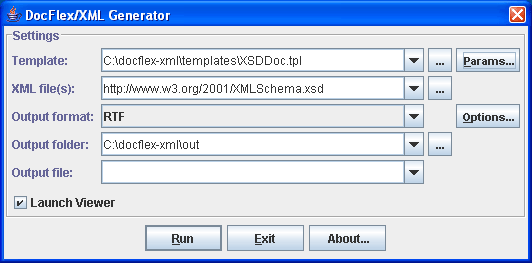
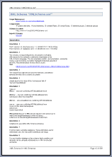
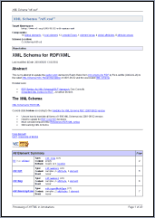

You can start generating your XML Schema documentation almost immediately. Just follow this instruction:
generator.bat to specify the 'JRE' variable according
to the location of Java 5 or Java 1.4.x installed on your system.
If you don't have Java 5 or Java 1.4.x installed on your system, you can freely download and install Java Runtime Environment (JRE) version 1.5.x from Sun Java Technology web-site: http://java.sun.com
generator.bat. You will see the
Generator Dialog,
as the one shown on this screenshot:

XSDDocFrames.tpl template
to generate framed HTML documentation or
XSDDoc.tpl template to generate
single-file RTF documentation.
XSDDoc.tpl
template!).
Now, by its performance, the result documentation generator (i.e. the templates plus the template interpreter) may well rival with anything written directly in Java or C++. However, unlike the general programming language, the template approach gives an incredible programming flexibility and integrity. The things that may take days or weeks of programming and debugging in Java can be done in a few minutes using DocFlex templates!
The performance statistics is the following.
Processing a typical little XML Schema you would normally find in most of applications (e.g. see "Sales Report" sample) on an ordinary modern PC (e.g. based on Intel Pentium 4 or AMD Athlon) may take just a few seconds (most of which will be just launching the JVM itself).
The biggest set of XML schemas, for which we have ever generated a single HTML documentation so far, is "XML Schemas for Eclipse UML2". Those schemas define in total 800+ separately documented components (some of which specify very complicated content models). In the resent test, it took only 205 seconds on a pretty ordinary computer to generate the entire HTML documentation consisting of 841 separate HTML files!
See XSDDoc | Examples for more demo documentations and statistics about other big XML schemas.
generator.bat).generator.bat).To set the template parameters, click "Params" button. The Parameter Inspector dialog will appear filled with the parameters declared in the selected template.
When you start everything the first time, all parameters have their default values specified in the template. As you set some parameters and close the inspector dialog, the values of the parameters you have set will be stored (along with the parameter names) in the generator.config file. Further, the generator will use those values from that file. So will be when you open the Parameter Inspector dialog next time. The template parameters, whose names match those found in the generator.config file, will be initialized with the corresponding values stored in that file. That's why when you want to generate something different than the previous time, you may need to change the template parameters appropriately.
To generate HTML documentation, the following parameters of XSDDoc.tpl and XSDDocFrames.tpl templates may be important:
| Parameter | Comment |
|---|---|
| Documentation Title | Here, you can specify the title to be placed at the top of the documentation overview. |
| Sections | parameter group |
Annotation |
parameter group |
Process XHTML tags |
Check this parameter, when your schemas contain annotations preformatted with XHTML. See also recommendation about HTML options. |
Copy images |
Check this parameter, when some of your annotations include images. See also: How to insert images? |
XML Source |
parameter group |
Enclose in Box |
parameter group |
Schemas |
These parameters specify if the various fragments of the reproduced XML source should
be enclosed in boxes (with the light-gray background).
In the case of HTML documentation, this will look good and make the XML source fragments look different.
So, you can set all those parameters true.
|
Attribute Detail |
parameter group |
Component's only |
This parameter controls if the Attribute Detail section of each Component Documentation should include details about all attributes associated with this component or only those directly defined in it (different attributes may be inherited from other components, from which the given component is derived). In the case of HTML documentation, the details generated for each attribute will be hyperlinked from anywhere that attribute is mentioned (for instance, from the XML Representation Summary). So, in order to make the result documentation more compact, it is better to have this parameter selected. |
Content Element Detail |
parameter group |
Component's only |
This parameter controls the same things as the parameter above, however now this is about documenting the definitions of the content elements associated with the component. In the case of HTML documentation, it is also better to select this parameter. |
When you click "Options" button (with the HTML format selected at that), you will see the HTML Option Inspector dialog, like shown on the screenshot:
The following options may by particularly important for the generation of HTML documentation:
| Option | Comment |
|---|---|
| Add Mark of the Web |
Check this option when the generated documentation is mostly intended for
viewing on your local system. This will force the generator to add
a special "Mark of the Web" (MOTW) comment in every generated HTML file.
Without that comment, on each opening of a new HTML file (e.g. when clicking on a hyperlink),
Microsoft Internet Explorer may pop up a security information bar saying that it has restricted
that file from showing active content. The "active content" in that case is
a few JavaScript operators used in the framed HTML documentation generated by DocFlex.
So, to avoid all that hassle, just set this option true.
|
| Render embedded HTML | Select this option (together with "Process XHTML tags" template parameter), when you want to show in the generated documentation the XHTML formatting specified in your annotations. |
| Render line breaks | Select this option, when you want the line breaks specified in your original annotation texts to be interpreted (with <BR> tags) in the generated HTML output. Note: When you use XHTML to format your annotations, this option may need to be unselected. |
generator.bat).
| Parameter | Comment |
|---|---|
| Documentation Title | Here, you can specify the title to be placed on the documentation first page. |
| Sections | parameter group |
Annotation |
parameter group |
Process XHTML tags |
Check this parameter, when your schemas contain annotations preformatted with XHTML. See also recommendations about RTF options. |
XML Source |
parameter group |
Enclose in Box |
parameter group |
Schemas |
These parameters specify if the XML source of the whole XML schema
and the fragments defining each component should be enclosed in boxes.
Since in RTF documentation, those XML source fragments may be big
and occupy entire page width, they will look better without boxes
(and a background color). So, we recommend setting those parameters
false.
|
Attribute Detail |
parameter group |
Component's only |
This parameter controls if the
Attribute Detail
section of each
Component Documentation
should include details about all attributes associated with this component or only those directly
defined in it (different attributes may be inherited from other components,
from which the given component is derived).
In the case of RTF output, you may want to generate a reduced version of the documentation
(because the full one with all possible details may stretch to hundreds of pages).
To get every attribute documented, you will need to set this parameter false.
|
Content Element Detail |
parameter group |
Component's only |
This parameter controls the same things as the parameter above, however now this is about documenting the definitions of the content elements associated with the component. In the case of RTF documentation, you may also need to have this parameter unselected. |
| Formatting | parameter group |
Allow nested tables |
This parameter controls whether the generated output may contain nested tables. XSDDoc templates frequently use tables as layouts in order to fit data better on a page. In certain cases, however, this leads to the situation when one table is nested into a cell of another table. For some RTF reader, this may cause a problem. Although RTF specification since v1.6 does support nested tables (as well as MS Word 2000 and the later), some modern and important RTF readers (such as OpenOffice.org 2.0) break on them. To work around this problem, all XSDDoc templates that use nested tables also contain alternative sections without them. Such sections will be activated instead of the primary ones, when this parameter is unchecked. Although, without nested tables some pieces of the documentation may look less compact and sleek, this still allows generating a quite decently looking output. Please, uncheck this parameter when your destination RTF reader has problems with nested tables! |
| Pagination | parameter group |
Generate page references |
This parameter specifies whether to generate the cross-reference page numbers, which serve as substitutions for some hyperlinks in the printed documentation to help navigating it. If you do not need those references (and feel that the generated output is too littered with them) you may uncheck this parameter. |
Start from new page |
parameter group |
Namespace Overview |
These parameters control which documentation blocks should be started from a new page. |
When you click "Options" button (with the RTF format selected at that), you will see the RTF Option Inspector dialog, like shown on the screenshot:
Please, pay attention to the following options:
| Option | Comment | ||||||
|---|---|---|---|---|---|---|---|
| Styles | option group | ||||||
Include paragraph styles |
These two options specify whether paragraph/character styles should be included in the generated RTF.
When the option is selected, for each style defined in templates a corresponding RTF style
will be generated and references to it will be inserted in every location where that style is used.
When the option is unselected, no specific style information will get into the RTF.
However, any formatting specified in the template styles will be used anyway.
You may need to disable the inclusion of style information in some situations,
when the generated RTF is intended primarily for using in non MS Word applications.
Certain RTF readers, although appear to understand most of the RTF settings quite well,
nevertheless, may produce such a mess with the styles imported from an RTF that the result document
may look considerably distorted.
Here are the option values recommended for different destination applications:
|
||||||
| Text | option group | ||||||
Render embedded HTML |
Select this option (together with "Process XHTML tags" template parameter), when you want to show in the generated documentation the XHTML formatting specified in your annotations. | ||||||
Render line breaks |
Select this option, when you want the line breaks specified in your original annotation texts to be interpreted with new lines in the generated RTF output. Note: When you use XHTML to format your annotations, this option may need to be unselected. | ||||||
| Other options | option group | ||||||
Tune output for MS Word |
When this option is true, the generator will adjust some RTF formatting
settings specifically for MS Word.
Although Microsoft is the originator of RTF format, the MS Word itself appears to have
some oddities of rendering certain RTF settings, even though those settings may well
follow the RTF specification. For instance, when displaying the paragraph or table borders,
their horizontal positions may be shifted (e.g. when MS Word interprets horizontal margins
of a paragraph, it draws the paragraph borders and paddings within the specified margin space
but not within the paragraph content as it might be natural).
To overcome this, in such cases, we adjust the initial dimensions in the opposite way
so as the result formatting would look properly in MS Word (e.g. to make the actual
paragraph margin look as intended the margin width specified in RTF is increased by the
paragraph border and padding widths).
However, when you generate RTF to display it primarily not in MS Word but rather
in different viewers or editors (e.g. OpenOffice.org under Linux), which interpret
the original RTF specification more literally, those specific adjustments may cause
a visible distortion of the intended formatting of the result document.
In such cases, we recommend to uncheck this option.
Values of this option recommended for different destination applications:
|
Let's suppose, we have an XML schema called "Products.xsd", which contains the following definition:
Now, we want to generate the documentation for that schema and integrate it together with the documentation generated for the "XML Schema for XML Schemas", which is the schema (found at<xs:element name="ProductId" type="xs:integer"/>
www.w3.org/2001/XMLSchema.xsd)
that defines the W3C XML Schema language itself.
To do this, in the "XML File(s)" field of the Generator Dialog, we should specify the following line:
or the following:Products.xsd http://www.w3.org/2001/XMLSchema.xsd
which is the same."Products.xsd" "http://www.w3.org/2001/XMLSchema.xsd"
After finishing of the generation, we will receive a documentation containing the full details of both "Products.xsd" and "XMLSchema.xsd" schemas. In addition, every type that is defined in "XMLSchema.xsd" and used in "Products.xsd" will be hyperlinked to its Component Documentation generated by "XMLSchema.xsd". For example:
Moreover, in that case, the Usage Locations Report of the<xs:element name="ProductId" type="xs:integer"/>
"xs:integer" type will also contain mentioning of the "ProductId"
element, which is defined in "Products.xsd" schema and uses this type.
"c:\My XML Projects\schemas\products.xsd"
This should be done both in the
Generator Dialog
and on the generator command line.
<xs:annotation>
element that allows adding comments into any XML Schema.
Precisely, the <xs:annotation>
element is a container of two other elements:
<xs:appinfo>,
which allows adding some additional custom instructions that may be used by a particular application
that processes the schema.
<xs:documentation>,
where your comment text should be actually inserted.
"SalutationType" type using
<xs:annotation>
element:
|
<xs:simpleType name="SalutationType">
<xs:annotation>
<xs:documentation>Complete List of all Salutations</xs:documentation>
</xs:annotation>
<xs:restriction base="xs:string">
<xs:enumeration value="MR."/>
<xs:enumeration value="MS."/>
<xs:enumeration value="MRS"/>
</xs:restriction> </xs:simpleType>
|
<xs:annotation>
element and generate by its content the "Annotation" section of the
Component Documentation. Click
here
to see how it will look.
Almost all XML Schema elements can include
<xs:annotation>
elements (click on the link to see precisely which).
However, not all of them are processed by XSDDoc templates.
Which exactly are processed you can see in this section:
XSDDoc | Processing of <xs:annotation> elements.
Within the <xs:documentation>
element, you can write any text containing any number of lines.
Note also that some XML markup character must be encoded with the corresponding entities:
| Character | Entity |
|---|---|
< |
< |
& |
& |
> |
> |
For more information about
<xs:annotation>
elements, see the following links:
<xs:documentation>
element (see How to add comments into my XML schema?)
may contain any number of lines.
You may produce the new lines simply for convenience during writing that text.
However, you may also use the new lines as a way to format your comments. In that case, most likely, you will want too see the same lines in the "Annotation" sections of the generated documentation. Click on the following screenshot to see how this may look:
That means that the generator must interpret the line breaks specified within the raw XML with the markup coding appropriate to the given output format (e.g. with "<BR>" in HTML or "\line" in RTF).
To tell the generator to do so, you should invoke the output Format Option Inspector (by clicking the "Options" button in the Generator Dialog) and select in it the "Render line breaks" option.
If you actually do not need to have the line breaks to be interpreted (which may be especially true when you format your comments using XHTML), make sure that "Render line breaks" option is always unchecked.
<xs:annotation>
elements,
this XML Schema documentation generator supports a much more powerful way of formatting your texts and descriptions.
Now, within the
<xs:documentation>
elements, rather than just plain text, you can specify a full-blown XHTML markup!
http://www.w3.org/1999/xhtml
<tag> ... </tag>
<tag/>
(Rather than simply '<tag>', which would be valid in HTML.)
For more information about XHTML, see these links:
|
<xs:schema xmlns:xs="http://www.w3.org/2001/XMLSchema">
...
<xs:annotation>
<xs:documentation xmlns="http://www.w3.org/1999/xhtml">
<h4>Complete List of all Salutations</h4>
Allowed only three values:
<ol>
<li>"MR."</li>
<li>"MS."</li>
<li>"MRS"</li>
</ol>
</xs:documentation>
</xs:annotation>
...
</xs:schema>
|
Here, the xmlns attribute specified in the start tag of the
<xs:documentation>
element switches the default namespace within it to XHTML. That means that any XML elements without namespace prefixes contained in that
<xs:documentation>
will belong to the XHTML namespace.
Now, we can freely use ordinary HTML tags to format our comment!
However, that was not the only way. To avoid specifying the full XHTML namespace URI at every
<xs:documentation>
element (or elsewhere), you can bind it only once to a certain prefix (for instance, "xhtml")
in the start tag of the very top XML schema definition element, that is the
<xs:schema>
element itself. Further, you should add that prefix to each HTML tag you use in your annotations.
Here is how the previous example will look in that case:
|
<xs:schema xmlns:xs="http://www.w3.org/2001/XMLSchema" xmlns:xhtml="http://www.w3.org/1999/xhtml"> ...
<xs:annotation>
<xs:documentation>
<xhtml:h4>Complete List of all Salutations</xhtml:h4>
Allowed only three values:
<xhtml:ol>
<xhtml:li>"MR."</xhtml:li>
<xhtml:li>"MS."</xhtml:li>
<xhtml:li>"MRS"</xhtml:li>
</xhtml:ol>
</xs:documentation>
</xs:annotation>
...
</xs:schema>
|
The XSDDoc templates
are designed so they can recognize the XHTML elements contained in
<xs:documentation>
elements and process them appropriately.
In fact, the templates simply filter all XHTML tags and reproduce them back with all namespace prefixes removed
(if any were used in the original comment source, as in the previous example).
So, the entire content of an
<xs:documentation>
element produces a piece of the normal HTML, which is inserted directly into the generated
HTML output or processed further, in the case of non-HTML output formats (see below).
Here is how such an HTML will look when generated from both of the above examples:
Complete List of all SalutationsAllowed only three values:
|
In the case of the RTF documentation (generated using
XSDDoc.tpl template),
the piece of HTML produced from the content of an
<xs:documentation>
element is processed even further.
All HTML tags are parsed and interpreted with the proper formatting features available in RTF.
Almost all HTML tags (and their attributes) practically usable in documentation comments are processed in that way.
Here's the list of all supported HTML tags:
| Text | <b>, <strong>, <i>, <em>, <code>, <tt>, <u>, <s>, <strike>, <sub>, <sup>, <font>, <br> |
| Paragraphs | <p>, <center>, <div>, <pre>, <h1>, <h2>, <h3>, <h4>, <h5>, <h6>, <blockquote> |
| Lists | <ul>, <ol>, <li>, <dl>, <dt>, <dd> |
| Table | <table>, <tr>, <td>, <th> |
| Other | <hr>, <img>, <a>...</a> |
The result RTF output generated by such an annotation preformatted with XHTML may look as on the following screenshot (click to see the real size page preview):

<img> tag.
Here is how this can be done:
|
<xs:annotation>
<xs:documentation xmlns="http://www.w3.org/1999/xhtml">
The "Valid XHTML 1.0 Strict" Icon:
<p/>
<img src="http://www.w3.org/Icons/valid-xhtml10.png"/>
</xs:documentation>
</xs:annotation>
|
After processing such an annotation, the generator will produce the following fragment of HTML:
The "Valid XHTML 1.0 Strict" Icon:

|
The images can also be inserted in the RTF output (see the screenshot above).
XSDDocFrames.tpl
and XSDDoc.tpl)
should be true.
true,
when you generate HTML output and want all images
specified in <img> tags to be automatically copied and stored along with
the result documentation (rather than left referred from it by the original URLs).
true.
false,
unless you want your original line breaks to be interpreted along with the HTML tags.
Most likely, the cause of all such odd things may be that some of your input XML schemas are actually invalid (that is, they do not strictly comply with W3C XML Schema specification).
In fact, XSDDoc templates do not verify the validity of the input XML schemas. The templates have been designed in assumption that the input XML schemas are correct. When a schema is incorrect, certain documentation will still be generated. However, what that documentation will be no one knows... Actually, it may be even more incorrect than the source schema because which exactly processing a particular invalid XML schema will spawn is difficult to predict.
So, before running the documentation generator, we suggest to verify your schemas(s) with an appropriate tool.
For instance, you may use an online XML schema validator found by this link: http://www.w3.org/2001/03/webdata/xsv. Otherwise, you can go to W3C XML Schema home page and look at the "Tools" section: http://www.w3.org/XML/Schema#Tools.
If all your schemas have passed the validation and the errors in the generated documentation still persist, then, indeed, there may be something wrong in the templates (or elsewhere)... In that case, please, let us know by sending a e-mail to: contact@filigris.com.